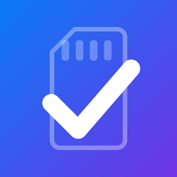
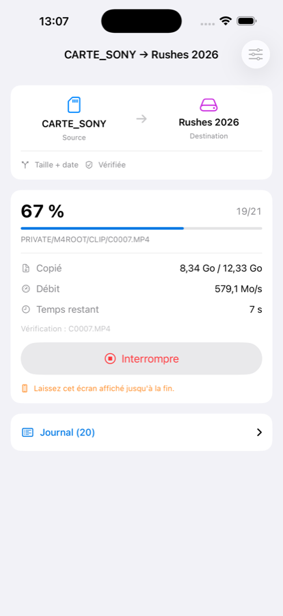
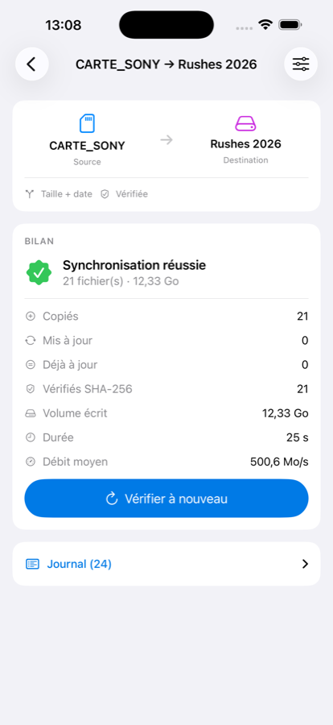
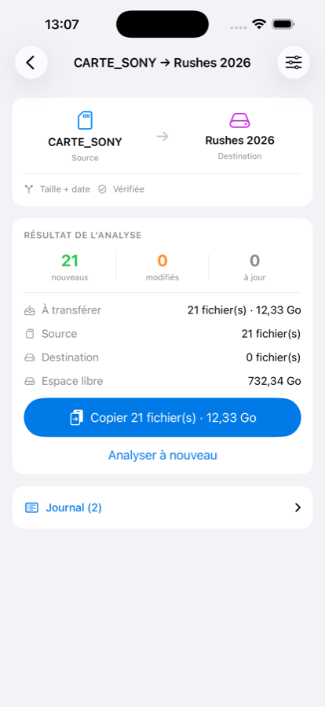

Vider une carte mémoire sur un SSD sans jamais se demander si la copie est fidèle. Chaque fichier écrit est relu et son empreinte SHA-256 comparée.



L'app Fichiers sait déplacer des fichiers. Elle ne sait pas vous dire si la copie est fidèle, ni ce qui manque encore, ni reprendre où elle s'était arrêtée.
Le fichier écrit est relu depuis le support, cache système contourné, et son empreinte comparée à celle de l'original — lui-même relu une seconde fois pour un dossier. Deux lectures divergentes désignent le lecteur de carte, et l'app le dit.
Analyse des deux côtés avant la moindre écriture. Vous voyez ce qui sera copié, puis vous décidez. Taille, taille et date, ou empreinte complète.
Écriture sous un nom temporaire, mise en place d'un seul geste une fois vérifiée. Un fichier déjà présent n'est jamais effacé avant que son remplaçant ne soit prêt.
Écran quitté, support débranché, batterie vide : relancer ne recopie que ce qui manque réellement. Ce qui a été vérifié n'est jamais refait.
Carte mémoire, SSD ou clé USB-C, iCloud Drive et les services installés, l'iPhone lui-même — dans les deux sens. Et un album de la photothèque comme source, originaux et Live Photos compris.
Lecture et écriture par blocs : une vidéo de 4 Go ne consomme pas plus de mémoire qu'une photo. Ni la taille des fichiers ni leur nombre ne sont une limite.
iOS ne permet pas de copier en arrière-plan sur un volume externe : CardSync doit rester affichée pendant le transfert. Elle empêche la mise en veille, et si vous quittez, la copie reprend au lancement suivant. Pour les gros volumes, un hub USB-C alimenté est vivement recommandé — un iPhone alimente mal un SSD gourmand.
Nous préférons le dire ici plutôt que vous le laisser découvrir.
Aucune donnée collectée, aucun compte, aucun suivi, aucune publicité. L'app ne contient aucun code réseau. Vos fichiers ne quittent jamais vos propres supports. La politique complète.